Живые ферменты ручной работы
Энзимы нового поколения для вашего здоровья. Чистые продукты и суперрастительные пробиотики, созданные в условиях, похожих на глубины океана.
Чисто · Честно · Результативно
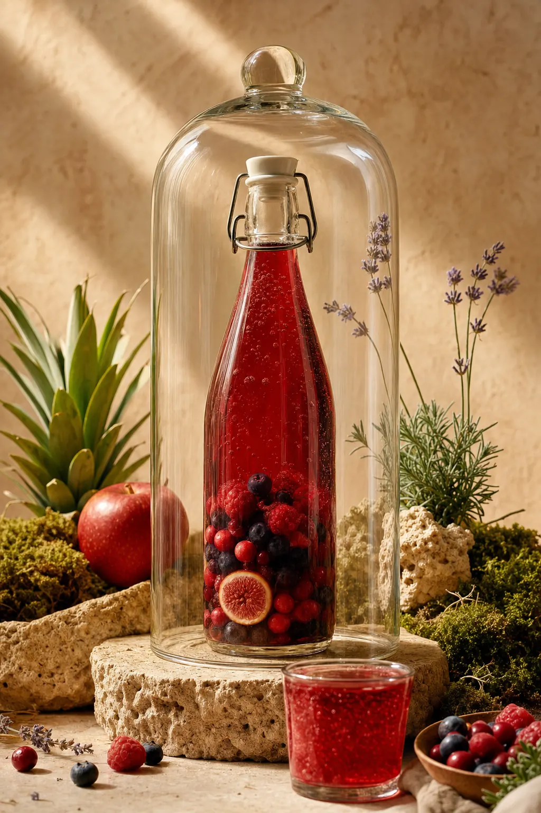
без термообработки · 10 атм
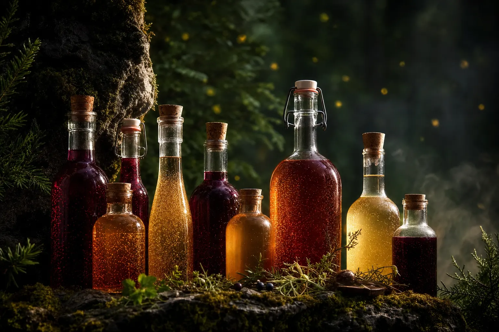
Мы не меняем мир — мы возвращаем его ощущение.
ЭТРА — источник трансформации. В основе — уникальные энзимы, вещества-ускорители, чистые продукты и суперрастительные пробиотики, которые в условиях, похожих на глубины океана, создают уникальные напитки.
Технология, дающая мгновенный чистый природный результат
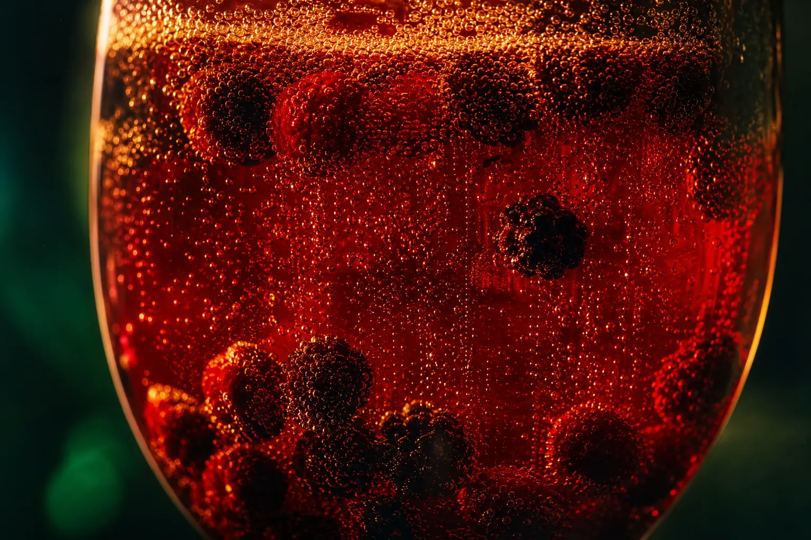
Натуральные ферменты, запускающие все процессы организма — от строения до усвоения всех микроэлементов. Ускорители обменных процессов: в них секрет усвоения и пищеварения. Они фундамент нашей молодости, бодрости и сил — именно их сохранность и наличие определяет наше долголетие и качество жизни.
фундамент молодостиГлавные соратники нашего организма — симбиоз 8 штаммов микробиома. Именно они строят полезные нутриенты, защищают организм от вирусов и патогенов и запускают процессы регенерации и восстановления микробиома. Источник жизни — ваш кишечник, и важно, кто его населяет и кто им управляет.
8 штаммов микробиомаСимбиоз миллиардов полезных бактерий. На нашем производстве, в процессе живой ферментации — без термической обработки продуктов — мы сохраняем и усиляем энзимы, тренируем и развиваем здоровых бактерий под давлением в 10 атмосфер и используем самые чистые продукты для питательных свойств.
10 атм · без термообработки · 186 часовС правильной микробиотой тело обретает здоровый и опрятный вид: уходят лишний вес и отёки, очищается кожа, крепнут зубы и кости, появляется бодрость и лёгкость, улучшается сон, пропадают вредные привычки, депрессия сменяется радостью, а витамины и микроэлементы усваиваются в полном объёме.
энергия без откатовФормула стабильности — 6–12 литров в месяц
Энзимные напитки работают на регулярности. 6–12 литров в месяц на человека — и тело начинает меняться по понятной схеме из трёх шагов.
Чистим
Освобождаем организм от токсинов, патогенов и паразитов. Чистый кишечник — фундамент, на котором строится всё остальное.
Наполняем
Заселяем микробиом живыми штаммами и кормим тело энзимами, витаминами и микроэлементами в биодоступной форме.
Закрепляем
Новая микрофлора становится хозяином. Привычки меняются сами, энергия становится фоном, а не событием.
Комплексные решения и точечные — под случаи жизни
Все напитки
Коктейли, сезонные и эксклюзивы — всё живое в одном месте
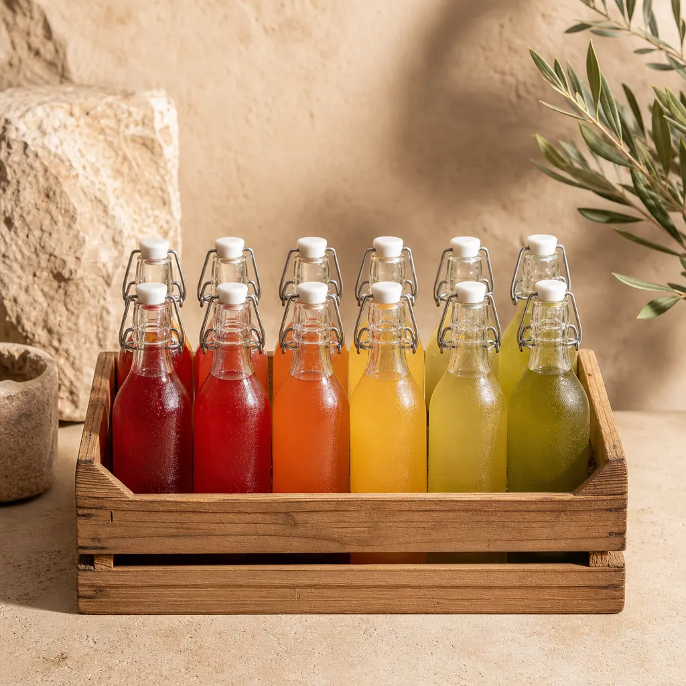
→Комплексные решения
Курс смены микробиома · 12 бутылок · точечные БАЖи
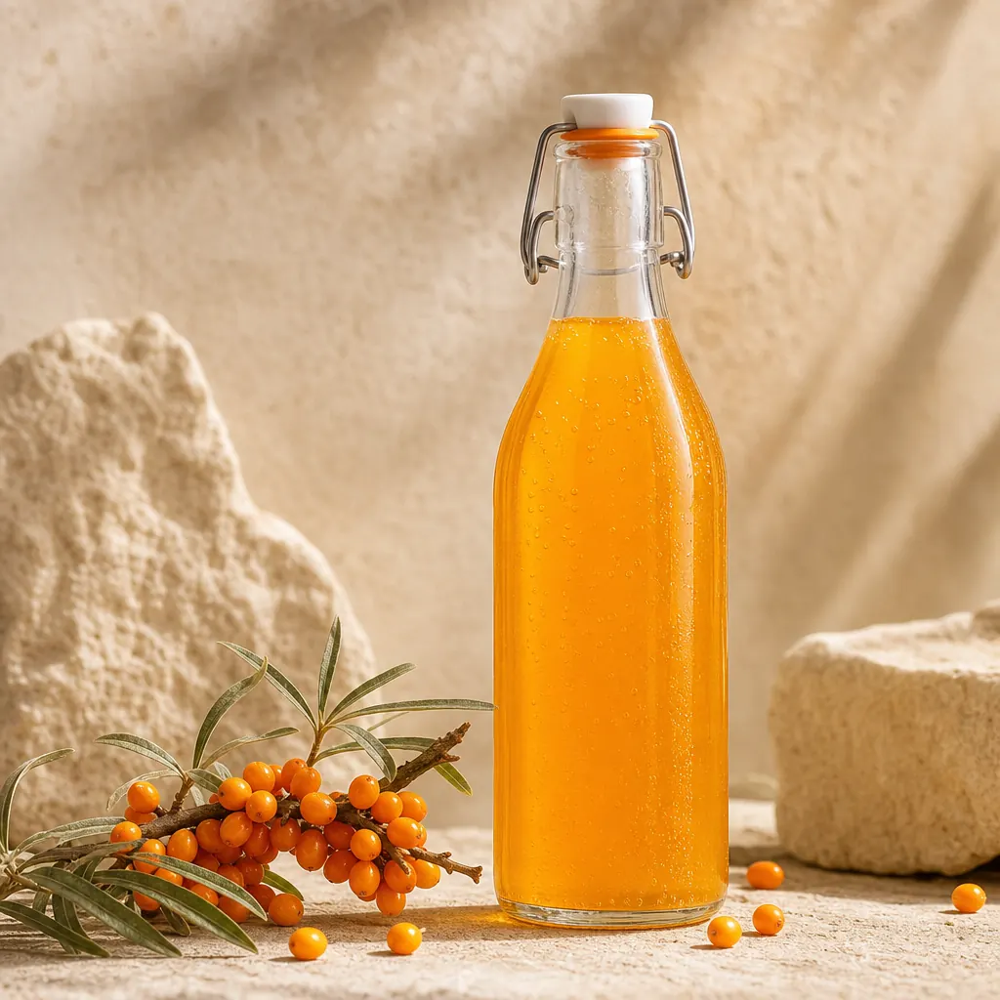
→Энзимные коктейли
Энергетик · Родник · Тархун · Квас · Хмель · Облепиха
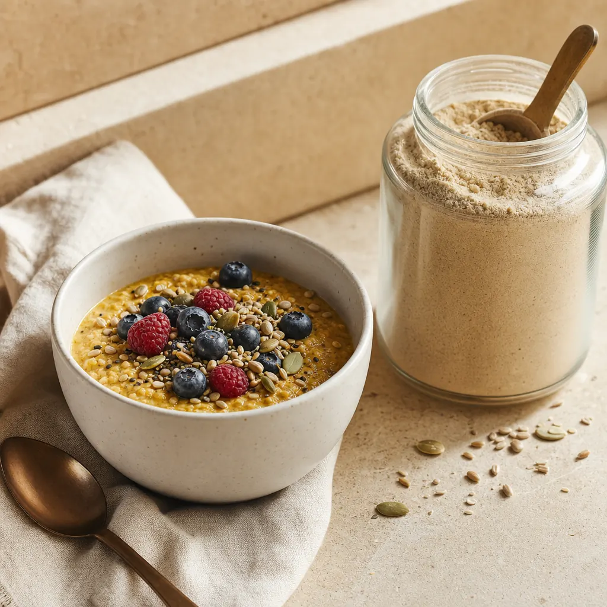
→Питание и чистки
Каша ЭТРАсУТРА · Паразитофф · пробиотические порошки
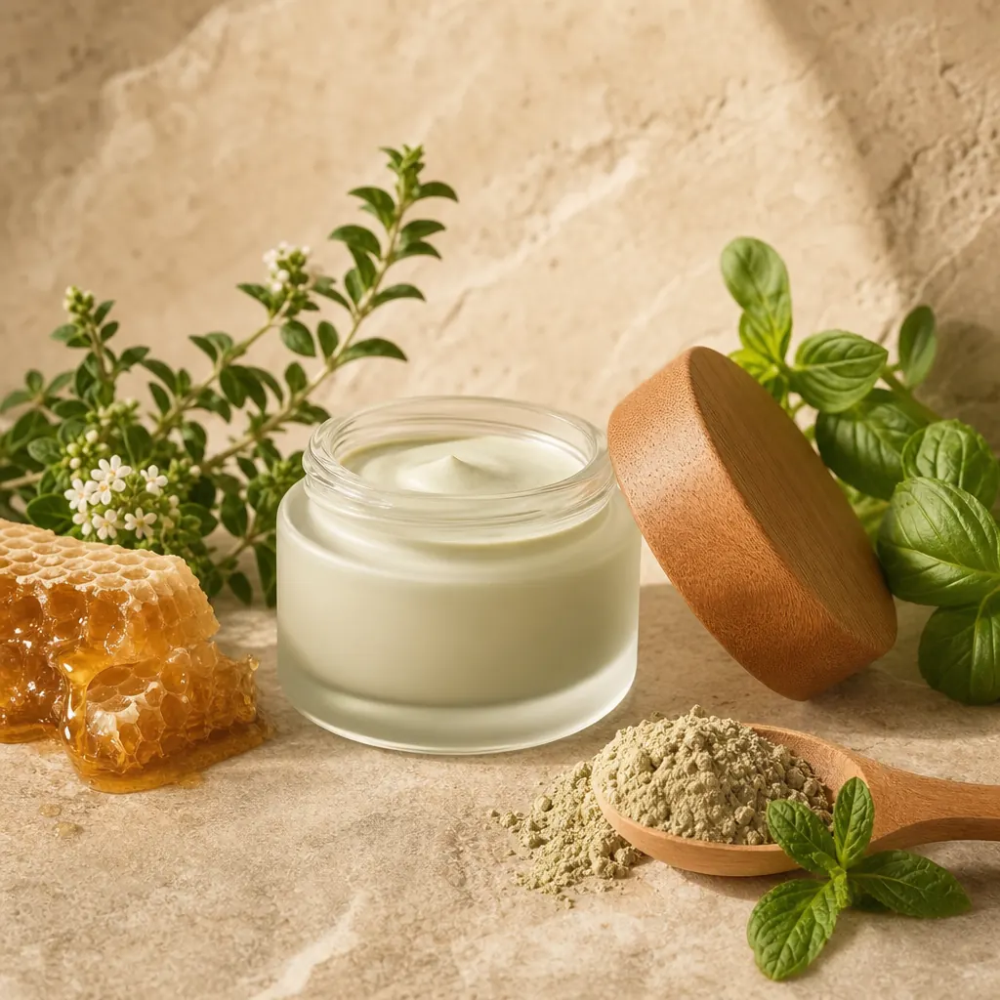
→Съедобная косметика
Гомаж, крем и паста — честность, проверяемая на вкус
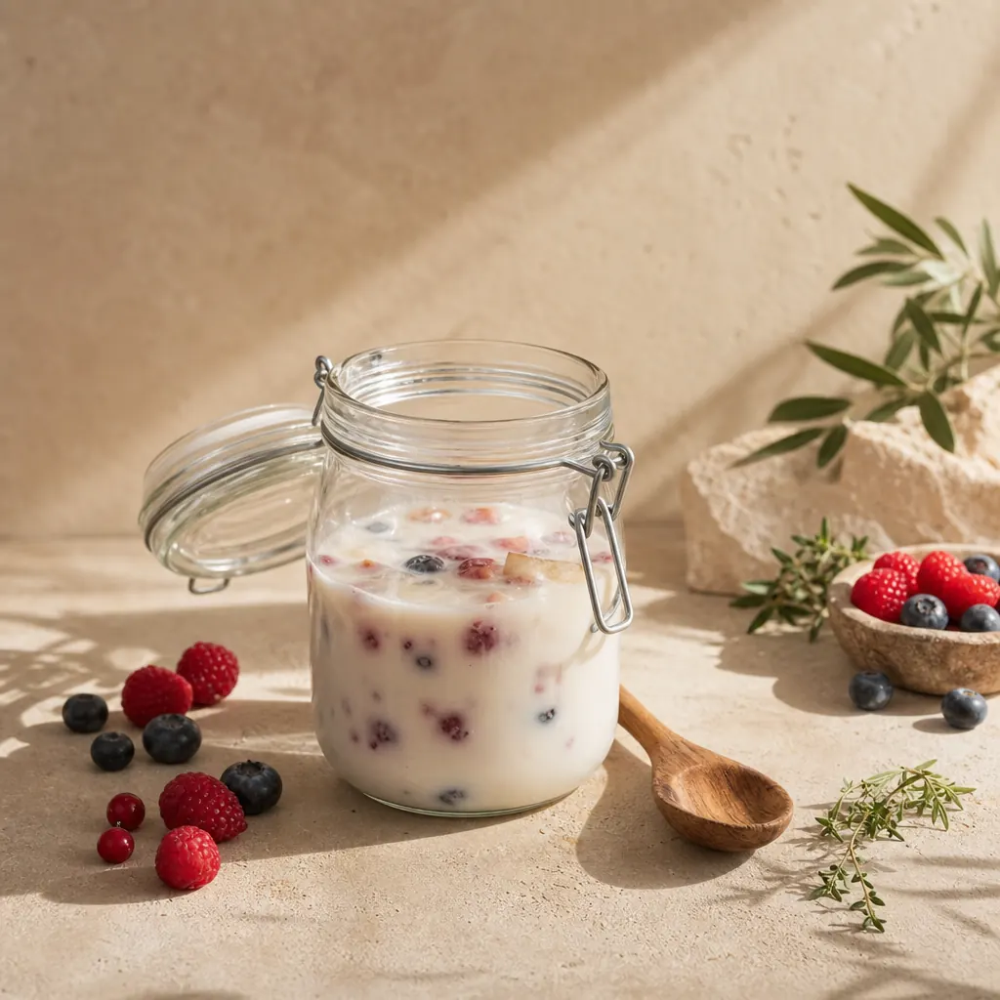
→Для фанатов
Закваска ПРАЭнзим — ферментация у вас дома
Каждый коктейль несёт своё состояние
Пили БАДы, сидели на диетах — получали откат
Ответ — натуральный живой процесс. Технология, а не таблетка. Концентрация живой ферментации делает то, что не может ни одна аптечная полка.
1 концентрированный капустный напиток — тысячи салатов по питательной ценности
1 бутылка «Чистого Утра» — курс антипаразитарных препаратов, мягко и без химии
1 месяц курса микробиома — годы попыток «наладить питание» силой воли
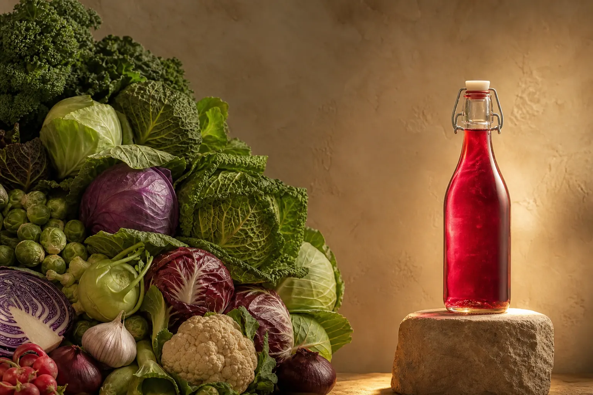
Что меняется у наших клиентов
Цифры собраны из реальных отзывов клиентов. Не обещание результата.
Живые истории — включая сдержанные
За месяц курса ушло 6 кг и — что важнее — тяга к сладкому. Я не боролась. Оно просто перестало быть нужным.
Скептик во мне умер на третьей неделе, когда я заметил, что просыпаюсь до будильника. Энергия ровная, без кофейных качелей.
Попробовал — не пошло. Вкус ферментации непривычный, бросил через неделю. Вернулся через месяц и распробовал. Теперь семья пьёт.
После курса гастроэнтеролог спросил, что я делала. Показатели, за которые мы бились два года, пришли в норму.
Хмель вечером вместо вина — мой новый ритуал. Расслабление есть, последствий нет. Муж перешёл следом.
Беру квас и тархун ящиками на всю семью. Дети сами просят вместо лимонада — для меня это главный показатель.
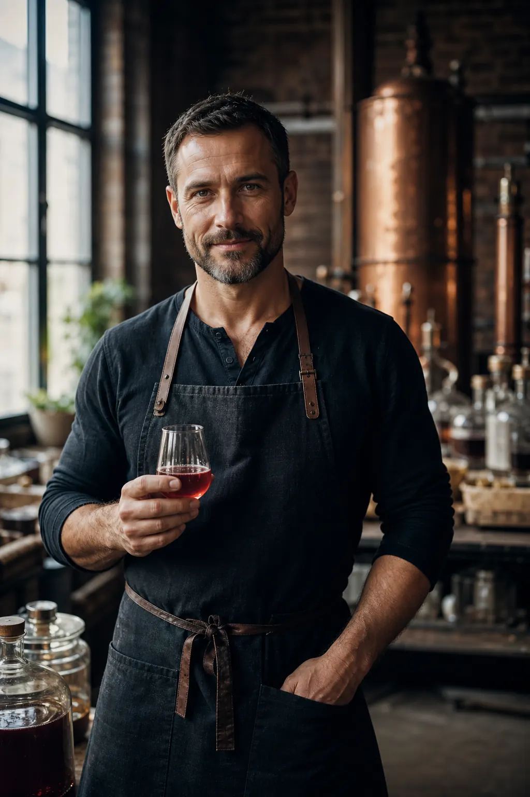
Кирилл — мастер живой ферментации
«Семь лет я собирал технологию, которой нет в Гугле. Не верьте мне на слово — проверьте на своём теле. Первая неделя всё расскажет.»
Человек, который в жизни всё может: лаборатория и реакторы, горы и заплывы, автоспорт и театр. Авторитет био-эко-тренда и основатель технологии ЭТРА.
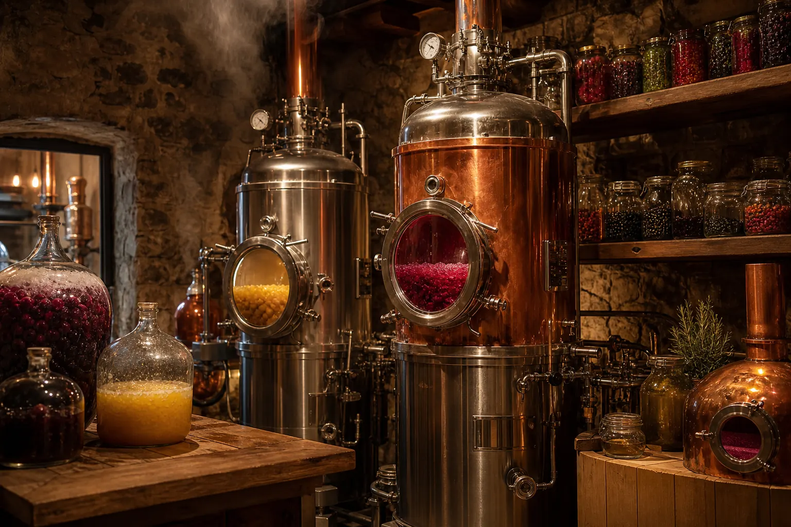
реакторы · лаборатория · 3D-тур
Станьте со-владельцем проекта
МПК «Развитие Народных Хозяйств» — народный краудфандинг: мы открываем производства вместе. В Москве уже собрали 111 миллионов.
Производство ферментации
Цех живых энзимов
Персики в джемах
Ретритный центр
За продуктом — команда
Три года собирали. Каждый протестирован в тяжёлых ситуациях.
Кирилл
«Технология — это я»
Павел
«Ферментация — это джаз»
Игорь
«Заказ доедет. Проверено»
Кристина
«Каждый отзыв читаю лично»
Лаборатория
«Каждая партия — под микроскопом»
Википедия по ферментации, которой нет в Гугле
Белая плёнка на фермéнте: почему это хорошо
Читать → ИсследованияДепонирование в аграрном университете: что подтверждают документы
Читать → Эфиры и интервьюЕфимов, Дементьев, эндокринологи: 8 млн охвата разговоров о ферментации
Смотреть → Навигатор ответовКороткие ответы на типовые вопросы — от дозировок до совместимости
Открыть →Самый полезный напиток — на вашем столе
Начните с 100–150 мл утром до еды. Через неделю — стакан утром и вечером. Формула стабильности: 6–12 литров в месяц на человека. К каждому продукту приложена схема для новичка.
В большинстве случаев — да, с интервалом 1,5–2 часа. При приёме серьёзных препаратов напишите нам в Telegram: ответим по вашей конкретной ситуации без авторизации и очередей.
У большинства первые ощущения — лёгкость после еды — приходят на 1–3 день. Устойчивые изменения — к 2–3 неделе регулярного приёма. Мы говорим «у большинства», потому что не обещаем — мы показываем статистику.
Нераспечатанный продукт — 100% возврат в течение 14 дней. Открытый — возврат при индивидуальной непереносимости по решению менеджера. Курсы — до старта 100%, после первого модуля пропорционально.
СДЭК (пункт выдачи или до двери) и Почта России. Конкретные сроки по вашему городу видны при оформлении — не «до 30 дней», а честные даты.